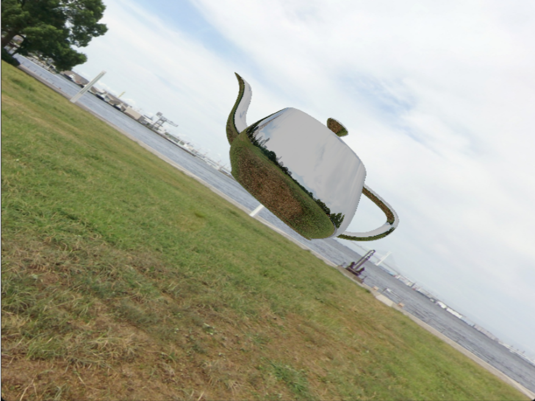

This is a 3D , Rasterization based Renderer with implemented Shadow Mapping and Environment Mapping.

Roles:
Programmer
Team Size:
Solo
Platforms:
PC
Engine/Language:
OpenGL/C++
Development
This renderer makes full use of the rendering pipeline to display a mesh scene in 3D Space. It can display shadows via depth shadow mapping, environments using
cube maps, and other techniques such as reflections all done through texture sampling and rasterization as opposed to ray tracing.
It also contains support for Geometry and Tesselation shaders. The renderer is built in OpenGL using GLFW as the window manager.